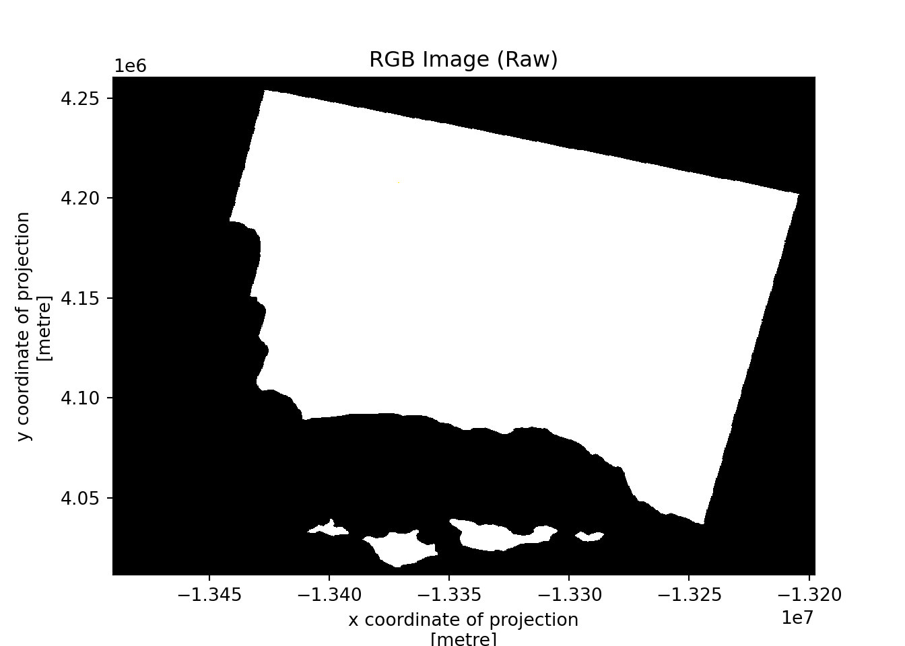
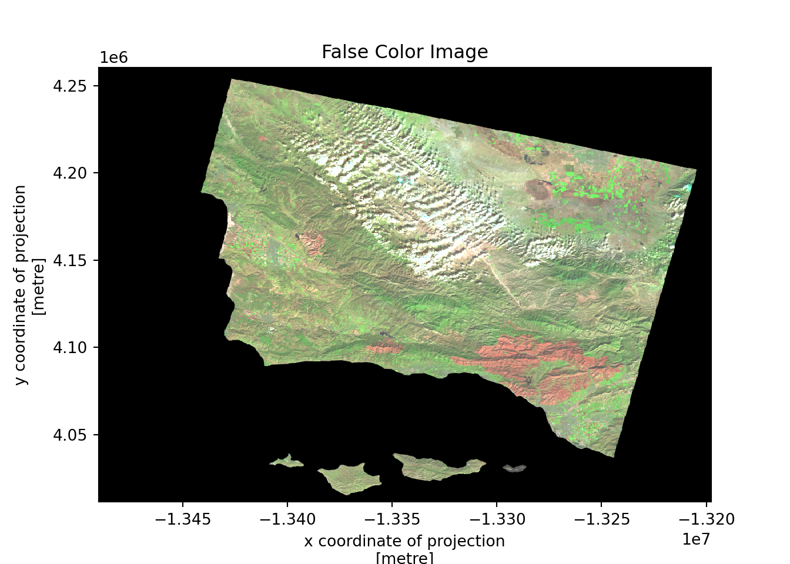
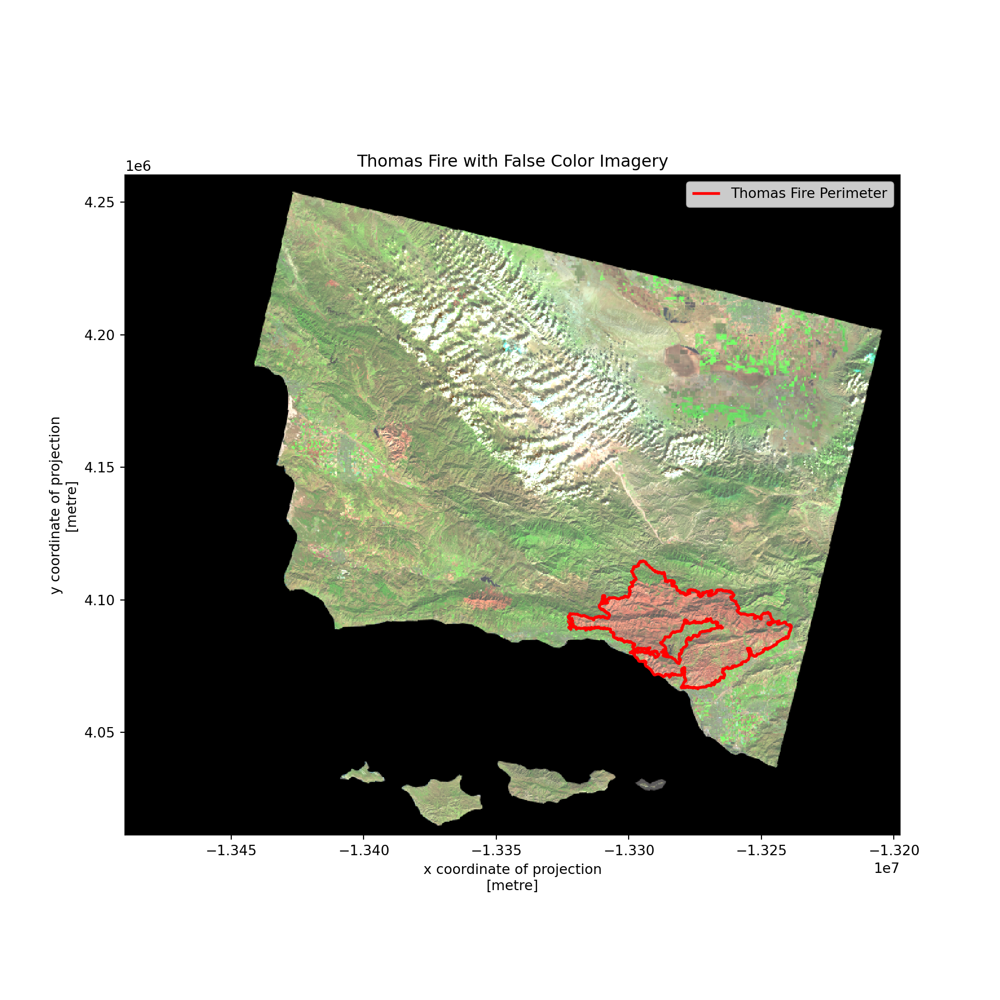
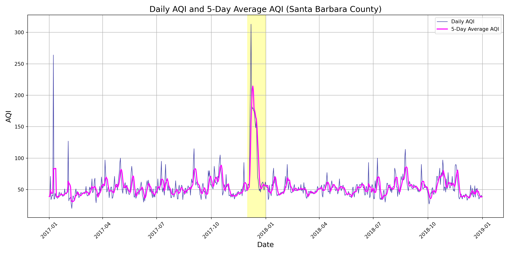

Parameter, True color image, False color image, Map & Air Quality
This code is designed to provide visual context for analyzing wildfire impacts using satellite imagery, combined with air quality data to assess the environmental and health consequences of the Thomas Fire in 2017.
The following code will use data from the sources below
Microsoft. (n.d.). Landsat Collection 2 Level-2 (C2 L2) data [Data set]. Microsoft Planetary Computer. Retrieved November 23, 2024, from https://planetarycomputer.microsoft.com/dataset/landsat-c2-l2
The second dataset is [historical open-access data about fire perimeters in California] in which I selected for the Thomas Fire parameters only (https://catalog.data.gov/dataset/california-fire-perimeters-all-b3436) from Data.gov.
U.S. Government. (n.d.). California fire perimeters (ALL) [Data set]. Data.gov. Retrieved November 23, 2024, from https://catalog.data.gov/dataset/california-fire-perimeters-all-b3436
What is a True Color Image (RGB)? A True Color Image (RGB) is a visual representation of data where the colors correspond to the red, green, and blue components of the light spectrum. These three colors—red, green, and blue—are the primary colors of light that the human eye can perceive. When combined, they form a full spectrum of visible colors. In the context of remote sensing and geospatial analysis, a true color image is created by combining data from three specific bands of a satellite image or raster data that correspond to these three visible light colors:
How a True Color Image is Created: For a true color image, the three bands (red, green, and blue) from satellite data are mapped directly to the red, green, and blue color channels in the image. - Red Band (corresponds to the red light wavelength) - Green Band (corresponds to the green light wavelength) - Blue Band (corresponds to the blue light wavelength)
When combined, they create a “true-color” image that visually represents the land surface as it would appear to human eyes in normal light. These bands are typically captured by satellite sensors like those on Landsat, Sentinel, or MODIS satellites. When these three bands are displayed together, they produce an image that closely matches what you would see with the naked eye in the real world, assuming no additional processing is done to enhance or modify the image.
Importance of True Color Images for Analyzing Data:
Natural Representation: True color images provide a realistic view of the Earth’s surface, similar to what we would see with our own eyes. This can be useful for quickly understanding the landscape, vegetation, water bodies, urban areas, and other natural features. For example, healthy vegetation usually appears green, water bodies appear blue, and urban areas appear gray or brown. Human Interpretation: True color images are intuitive and easier to interpret for people who may not be experts in geospatial analysis or remote sensing. They allow viewers to visually analyze the environment without the need for technical processing or specialized knowledge. Assessing Land Cover and Vegetation: Vegetation health and density are often best seen in true color images, since plants typically reflect more green light. For example, forests, grasslands, or agricultural areas will appear green, and by observing changes in the color intensity, analysts can determine the condition of the vegetation. Identifying Changes Over Time: By comparing true color images captured at different times, it’s possible to visually assess changes in land use, deforestation, urbanization, or even damage from natural disasters (e.g., fires, floods, or hurricanes). Changes in vegetation color or land cover can be immediately apparent in a time-series of true color images. Urban Planning: True color images are often used in urban planning and infrastructure development because they give planners an immediate sense of the existing land cover and its spatial arrangement. The ability to easily recognize cities, roads, water bodies, and vegetation in true color images helps in the planning and development process. Disaster Monitoring: During or after natural disasters (like wildfires, floods, or hurricanes), true color images can be used to assess the extent of damage. In cases like the Thomas Fire you referenced earlier, a true color image can help differentiate between burned areas (which may appear brown or black) and healthy vegetation (which remains green). Reference for Other Image Types: True color images serve as a baseline for other types of imagery and analysis. For instance, scientists might use false-color images (using infrared bands) to highlight certain features, like vegetation health, but they still rely on true color images for initial assessment and comparison.
Limitations of True Color Images:
Cannot See Non-visible Wavelengths: True color images are limited to the visible spectrum (Red, Green, Blue), so they don’t show features that might be visible in non-visible parts of the electromagnetic spectrum, like infrared (which can be useful for vegetation health analysis). Cloud Cover: Clouds can be problematic in true color images. Clouds and snow can reflect strong light in the visible spectrum, leading to visual artifacts. Special processing might be needed to remove or mask clouds. Difficulty with Land and Water: In some cases, it may be hard to distinguish between different types of land (e.g., barren land vs. urban areas) or between shallow waters and land, because all of these may have similar colors in the visible spectrum. True Color vs. False Color Images: While True Color images are based on visible wavelengths, False Color images use combinations of different bands, often infrared or other spectral bands that are not visible to the human eye. False color imagery is extremely useful for specific types of analysis (like vegetation health or water quality), but it doesn’t provide the “real-world” view that true color images do. True Color Image: False Color Image: Uses non-visible wavelengths (e.g., Near-Infrared, Shortwave Infrared), which help highlight features like vegetation, water, or urbanization.
First let’s look at RGB output
Import libraries
#install.packages("reticulate")library(reticulate)# Specify the Python executable pathuse_python("/Users/yos/opt/anaconda3/bin/python3")# Check if Python is configured correctlypy_config()
python: /Users/yos/opt/anaconda3/bin/python3
libpython: /Users/yos/opt/anaconda3/lib/libpython3.8.dylib
pythonhome: /Users/yos/opt/anaconda3:/Users/yos/opt/anaconda3
version: 3.8.8 (default, Apr 13 2021, 12:59:45) [Clang 10.0.0 ]
numpy: /Users/yos/opt/anaconda3/lib/python3.8/site-packages/numpy
numpy_version: 1.24.4
NOTE: Python version was forced by use_python() function
import osimport rioxarray as rioxrimport matplotlib.pyplot as pltimport numpy as npimport geopandas as gpdimport fionaimport rasteriofrom rasterio.plot import show
When working with datasets or results that are stored in different directories, os helps you manage file paths, allowing your code to be flexible and system-agnostic. For example, os.path.join() is often used to create platform-independent file paths.
As for rioxarray, this is an extension of the xarray library for handling geospatial raster data (like satellite imagery or other geospatial data formats). It leverages rasterio to read, write, and process raster files.
For visualizations matplotlib.pyplot is one of the most commonly used libraries in Python for creating static, interactive, and animated plots and graphs. In geospatial analysis, you can use plt.imshow() to visualize raster images (such as satellite imagery) and adjust color maps to highlight different features (e.g., vegetation or urban areas).
Geospatial data (both raster and vector) often require heavy mathematical manipulation. numpy enables efficient handling of large datasets, as well as performing calculations on multi-dimensional arrays (which are common in remote sensing).
geopandas is a Python library designed to handle vector geospatial data, such as points, lines, and polygons. It extends the functionality of the popular pandas library to support geospatial data types. geopandas makes it easy to work with different CRS, perform reprojection, and align vector and raster data in the same projection system.
rasterio is a Python library for reading and writing raster data (e.g., satellite images, digital elevation models, etc.). It allows you to interact with geospatial raster data and metadata, such as coordinate reference systems (CRS), pixel values, and georeferencing.
Submodule rasterio.plot helps you quickly visualize raster data, particularly useful when working with large satellite or aerial imagery datasets.
File path and import data
File path to the Landsat data using os and import using rioxr.open_rasterio().
# Construct the file pathbase_dir ='data'landsat ='landsat8-2018-01-26-sb-simplified.nc'file_path = os.path.join(base_dir, landsat)# Open the raster data using rioxrlandsat_data = rioxr.open_rasterio(file_path)# Print landsat dataprint(landsat_data)
<xarray.Dataset>
Dimensions: (band: 1, x: 870, y: 731)
Coordinates:
* band (band) int64 1
* x (x) float64 1.213e+05 1.216e+05 ... 3.557e+05 3.559e+05
* y (y) float64 3.952e+06 3.952e+06 ... 3.756e+06 3.755e+06
spatial_ref int64 0
Data variables:
red (band, y, x) float64 ...
green (band, y, x) float64 ...
blue (band, y, x) float64 ...
nir08 (band, y, x) float64 ...
swir22 (band, y, x) float64 ...
After exploration of the data, that is important in determining the next steps to take for the final output of a RGB image, I was able to obtain the following. The data is geospatial data with x, y, which represent the spatial grid and band. The band variables are red, green, blue, nir08, swir22. Each variable has 5mb of data and are float64 or a number that can be a decimal. The dimensions are 889 for the x longitude, and 757 for the y latitude. The crs is WGS 84 or pseudo mercator. The scale factor is 1.0 not requiring alteration. The code below is what I used to explore the data.
# Print coordinates#print("\nDataset Coordinates:",landsat_data.coords)# Print variables#print("\nDataset Variables:",landsat_data.variables.keys())# Print dimensions#print("\nDataset Dimensions:",landsat_data.dims)# Print band names and values#print("\nBand Names and Values:",landsat_data.data_vars)
Drop dimension, but why?
Each band represents data from a specific spectral range (e.g., red, green, blue, near-infrared). When working with multispectral raster data (like satellite imagery), the band dimension corresponds to the different spectral bands captured by the satellite sensor.
Dropping the band dimension of the data, especially in the context of geospatial raster data, is important for simplifying the dataset and making it easier to work with, depending on the analysis you’re performing. The methods squeeze() and drop_vars() are useful tools to achieve this and help clean up your dataset by removing unnecessary dimensions or variables.
The squeeze() method is used to remove dimensions of size 1 from an array. This is important when the dataset has dimensions that are not necessary for the analysis, which could result in confusion or the need for extra processing.
The drop_vars() method is used to drop specific variables from a dataset. In the case of geospatial data, this could refer to removing individual bands or metadata variables that are no longer required for analysis or visualization.
# Drop single band with squeeze, and drop variables associated with bandlandsat_data = landsat_data.squeeze()landsat_data = landsat_data.drop_vars('band')# Verify dimensions and coordinatesprint(landsat_data.dims, landsat_data.coords)
Finally plotting without new variables, the code below does the follwoing to achieve the desired visualization.
selecting the red, green, and blue variables (in that order) of the xarray.Dataset holding the Landsat data,
converting to a numpy.array using the to_array() method, and then
using .plot.imshow() creating an RGB image with the data. Warning is ok.
# Plot landsat data as rbg arraylandsat_data[['red', 'green', 'blue']].to_array().plot.imshow()plt.title('RGB Image (Raw)') plt.show()

Trying again, because something is wrong…
The issue here is the clouds: their RGB values are outliers and cause the other values to be squished when plotting. By using robust=True the actual RGB image is displayed.
# Plot landsat data as rbg array, include robust true to fix outlierslandsat_data[['red', 'green', 'blue']].to_array().plot.imshow(robust=True)plt.title('RGB Image (True Color)') plt.show()
Yay, we did it!
So with this operation geopandas fixes the geometries that may be causing a failure (such as cloud cover) that could skew the RGB data, resulting in a more accurate and visually appealing true-color image.
False color image
A false color image is a type of image in which colors are used to represent different features or properties of the scene, but the colors do not correspond to the colors as we would normally see them with our eyes. Instead of using the visible light spectrum (Red, Green, Blue - RGB) to create an image, false color images typically use data from other parts of the electromagnetic spectrum, such as infrared and thermal bands, to highlight specific features that may not be visible in true color images.
In false color images:
Red, Green, and Blue bands are replaced by data from other spectral bands, such as infrared (IR), short-wave infrared (SWIR), or near-infrared (NIR).
These images are often used to enhance the visualization of certain features, such as vegetation, water bodies, and urban areas, by assigning different colors to them.
Why false color imaging is important
Vegetation Analysis: Vegetation is often emphasized in false color images, particularly by using Near-Infrared (NIR) bands, which are strongly reflected by healthy vegetation. In a false color image, healthy vegetation appears bright red (when NIR is mapped to red), making it easy to identify and monitor plant health or biomass.
Monitoring Deforestation and Land Use Change: False color images are commonly used to track land cover changes, such as deforestation, urbanization, and agricultural expansion. For example, a false color image with NIR mapped to red helps to easily distinguish vegetated areas (which would appear red) from other surfaces like bare soil or urban infrastructure (which would appear in different colors).
Soil Types: Different soil types, such as dry soil versus moist soil, can be more easily identified by using specific bands that reflect light differently. This is useful for agricultural planning or environmental monitoring.
Drought or Water Stress: In agriculture, drought or water stress can be identified through changes in vegetation health, which is visible in false color images where vegetation will show a distinctive color (often red or yellow when under stress).
# Plot landsat data as false color image as array, include robust true to fix outlierslandsat_data[['swir22', 'nir08', 'red']].to_array().plot.imshow(robust=True)plt.title("False Color Image") # Title of plotplt.show() # Show plot

Before we map the Thomas Fire, a little on parameter
In a previous code chunk I manually selected for the parameter of the Thomas Fire. To briefly explain that code that is not in this blog: I imported essential libraries like requests, zipfile, geopandas, and shutil to download, extract, and manipulate geospatial data, I downloaded a ZIP file containing fire perimeter shapefiles from a public URL and extract the contents into a directory (CA_perimeter_dir), I loaded the shapefile into a GeoDataFrame and checked the CRS, which is identified as a projected CRS in meters, I listed the unique fire names and focused on retrieving the Thomas Fire (2017) by filtering based on the FIRE_NAME and YEAR_ columns, I filtered the dataset to select for the Thomas Fire boundary in 2017, specifically where FIRE_NAME is “THOMAS” and YEAR_ is 2017, I saved the selected perimeter data for the Thomas Fire as a shapefile (Thomas_fire_perimeter.shp) in a data/ directory, after saving the relevant shapefile, and finally I deleted the extraction directory to keep the workspace clean. The Thomas Fire shapefile is the file I use for the next visualization.
Time to Map :)
print(fiona.__version__)
1.9.0
print(gpd.__version__)
0.13.2
# Import thomas shape filefire_shapefile ='data/Thomas_fire_perimeter.shp'# File paththomas_fire = gpd.read_file(fire_shapefile) # Read in file with file path
# Make crs the same for both datathomas_fire = thomas_fire.to_crs(landsat_data.rio.crs)
# Plot Thomas fire parimeter with false color imageryfig, ax = plt.subplots(figsize=(10, 10)) # Figure sizelandsat_data[['swir22','nir08','red']].to_array().plot.imshow(robust=True, # Plot false color from landsat data as array ax=ax) # Set axisthomas_fire.boundary.plot(ax=ax, # Set axis edgecolor='red', # Boundary color linewidth=2, # Boundary width label="Thomas Fire Perimeter") # Boundary labelplt.title("Thomas Fire with False Color Imagery") # Title of plotplt.legend() # Legendplt.show() # Show plot

Figure description
The figure above shows the area of Santa Barbara county which the Thomas fire occurred in 2017, with a red outline for clarity. The image is in short-wave infrared, near-infrared, and red considered a false color image. This technique allows for better identification of burned areas, as the NIR band highlights areas affected by fire. The false color image clearly shows the red land compared to the green, enhancing the visibility of burned areas, as the NIR band highlights vegetation and areas affected by fire, while the SWIR band distinguishes between different land cover types. Darker red means the area has been burned recently, the lighter red shown above means the area has been burned but not so recent, in 2017.
Next we will look at the Air Quality Index during the time of the Thomas Fire.
Air quality during and after fires is critically important for several reasons, as wildfires and even smaller fires can release a variety of harmful pollutants into the air, which pose serious health risks to humans and animals. During a wildfire, a number of harmful substances are released into the air. These pollutants can have immediate and long-term health impacts, particularly for vulnerable populations such as children, the elderly, and people with pre-existing health conditions. Wildfires can have a devastating impact on local ecosystems, and poor air quality during and after fires can harm vegetation and animal life.
import pandas as pdaqi_17 = pd.read_csv("data/daily_aqi_by_county_2017.csv")aqi_18 = pd.read_csv("data/daily_aqi_by_county_2018.csv")# Combine datasets (2017 and 2018)aqi = pd.concat([aqi_17, aqi_18])# Simplify column namesaqi.columns = (aqi.columns .str.lower() .str.replace(' ', '_') )# Save filtered (Santa Barbara) data aqi_sb = aqi[aqi['county_name'] =='Santa Barbara']# Keep only specific columns (date, aqi, category, defining_parameter, defining_site, and number_of_sites_reporting)aqi_sb = aqi_sb[['date', 'aqi', 'category', 'defining_parameter', 'defining_site', 'number_of_sites_reporting']]# Convert specific object column (date) to datetime objectaqi_sb['date'] = pd.to_datetime(aqi_sb['date'])# Save with new (date) indexaqi_sb = aqi_sb.set_index('date').sort_index()# Add new 5 day mean column to data (Santa Barbara)aqi_sb['five_day_average'] = aqi_sb['aqi'].rolling(window='5D').mean()
# Plot figureplt.figure(figsize=(14, 7))# Plot aqi , label, color, size, and transparencyplt.plot(aqi_sb.index.values, aqi_sb['aqi'].values, label='Daily AQI', color='darkblue', linewidth=1, alpha=0.7)# Plot average, label, color, and sizeplt.plot(aqi_sb.index.values, aqi_sb['five_day_average'].values, label='5-Day Average AQI', color='fuchsia', linewidth=2)# Title and sizeplt.title('Daily AQI and 5-Day Average AQI (Santa Barbara County)', fontsize=16)# X label and sizeplt.xlabel('Date', fontsize=14)# Y label and sizeplt.ylabel('AQI', fontsize=14)# Rotate x-axis labelsplt.xticks(rotation=45)
# Legendplt.legend()# Gridplt.grid() # Add shaded area for Thomas fireplt.axvspan(pd.Timestamp('2017-12-01'), pd.Timestamp('2017-12-31'), color='yellow', alpha=0.3)# Layoutplt.tight_layout()# Show plotplt.show()

The air quality during the Thomas Fire was high. The Thomas fire shows a spike in the aqi daily shown in blue and 5 day average shown in pink. I’ve highlighted the month of December yellow to clarify the spike occurence. I suggest doing this to clearly identify the time of interest. It is clear that the daily aqi was much higher than the 5 day average but the 5 day average does remain high for a while compared to normal days. The daily aqi dropped from the highest point to where the average remained. For atleast half of the month of December the daily aqi and the 5 day average were above 150 in which pollution would be a problem. This data visualization shows the importance of being able to gather data and applying the skills of analysis.
Data analysis helps identify the sources and patterns of pollution, whether it’s from industrial activities, vehicle emissions, agricultural runoff, or natural events like wildfires. Understanding where and when pollutants are released is the first step in controlling them. By analyzing historical data, we can detect trends in pollution levels, such as increases or decreases in air, water, or soil quality over time. This can help policymakers and environmental agencies make informed decisions about interventions. Data analysis allows for the creation of clear, visual representations of pollution levels, such as maps, graphs, and interactive dashboards. Data analysis can identify areas where pollution control technologies can be most effective, encouraging innovation in clean energy, waste management, or pollution-reducing technologies.